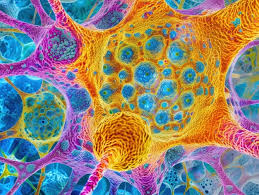
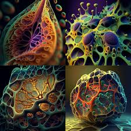
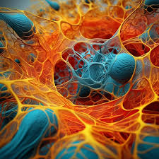

 

APA_DSM_Changes_from_DSM-IV-TR_-to_DSM-5.pdf
ICD-11-Newsletter-July-2024.pdf
March_19_2024__ICD_10_Therapeutic_Agents_Topics_FINAL_2.23.24.pdf
NCVHS-ICD-11-RFI-Responses-final.pdf
ICD-10-CM-Guidelines-April-1 FY2024.pdf
Monsieur Zaher Nourredine
: Découvrez les détails et les conditions de la licence de la CIM-11.
: Obtenez les dernières mises à jour et nouvelles sur la CIM-11.
DSM 5 TR - et : Accédez aux manuels diagnostiques et statistiques des troubles mentaux.
APA_DSM_Changes_from_DSM-IV-TR_-to_DSM-5.pdf : Comprenez les modifications importantes entre les versions IV et V du DSM.
MedImageInsight : Apprenez-en plus sur ce modèle open-source d'intégration d'imagerie médicale, entraîné sur une vaste gamme d'images médicales, y compris les radiographies, les tomodensitogrammes, les IRM, et bien plus encore.
ICD-10 : Téléchargez des documents comme "icd10volume2_fr_2008.pdf" pour des informations détaillées sur la CIM-10.
: Consultez les réponses finales de la NCVHS concernant la CIM-11.
La délinquance liée au cannabis est un sujet complexe. Si les dealers devenaient des fonctionnaires pour vendre du cannabis, cela pourrait potentiellement réduire la criminalité associée à son commerce illégal. Cependant, cela nécessiterait une régulation stricte et des politiques bien définies pour éviter d'autres problèmes.
Le cannabis, comme l'alcool, est une plante de la terre. Son statut légal varie selon les pays et les cultures. Dans certains endroits, il est utilisé à des fins médicales, comme vous l'avez mentionné avec l'Empire Ottoman. Aujourd'hui, il est également autorisé dans certains pays pour des usages médicaux, notamment pour traiter des conditions graves comme la douleur chronique.
Quant à l'évolution de la technologie et des croyances, il est
fascinant de voir à quel point notre compréhension du monde a changé. Il y a
mille ans, beaucoup de choses que nous tenons pour acquises aujourd'hui, comme
l'Internet et les voyages dans l'espace, étaient inimaginables.
LES MUTATIONS DU MARCHÉ DU CANNABIS EN FRANCE
Violence, alcool, cannabis et dépression chez les adolescents
La question de la légalisation de toutes les drogues est complexe et débattue. Voici quelques avantages souvent évoqués :
Avantages potentiels de la légalisation :
Réduction de la criminalité: En régulant et en contrôlant la vente de drogues, on pourrait réduire le marché noir et le crime organisé.
Sécurité accrue: Les utilisateurs auraient accès à des substances moins dangereuses grâce à un contrôle de la qualité et à des informations claires sur les risques.
Économies: Les coûts associés à la répression des drogues pourraient être redirigés vers des programmes de prévention et de traitement.
Liberté individuelle: Chacun aurait la liberté de choisir d'utiliser ou non des substances, dans un cadre légal et encadré.
Avantages en termes de communication :
Éducation: Une légalisation pourrait s'accompagner de campagnes de sensibilisation sur les effets et les risques des drogues.
Stigmatisation: La discussion ouverte pourrait réduire la stigmatisation associée à l'usage de drogues et encourager les utilisateurs à rechercher de l'aide.
Dialogue public: Le débat sur la légalisation pourrait favoriser une meilleure compréhension et des discussions plus équilibrées sur la politique des drogues.
Cependant, il existe également de nombreux défis et risques associés à une telle démarche.
Cela montre à quel point
l'humanité
peut progresser et s'adapter.
qu'est que le micriobtiote et instestin et le deuxieme cerveau du ventre
Le microbiote intestinal est un ensemble de micro-organismes qui vivent dans notre système digestif. Ce microbiote joue un rôle crucial dans la digestion des aliments, la production de certaines vitamines, et la protection contre les pathogènes.
Quant à "le deuxième cerveau du ventre," c'est une expression utilisée pour décrire le système nerveux entérique. C'est un réseau complexe de neurones qui contrôle le fonctionnement du tractus gastro-intestinal. Ce système peut fonctionner indépendamment du cerveau et de la moelle épinière, et il est influencé par les mêmes neurotransmetteurs que notre cerveau principal.
En résumé, le microbiote et le système nerveux entérique travaillent ensemble pour maintenir notre santé intestinale et ont un impact significatif sur notre bien-être général.
As-tu déjà entendu parler de la relation entre le microbiote et la santé mentale ? C'est un domaine fascinant de recherche en pleine expansion.
Article de Nourredine sur les differents microbiotes qui compose les organismes organiques
Essai Metaphysique de Nourredine
Free and Open-source Medical Simulation Projects in 2024
MedImageInsight, un modèle d'intégration d'imagerie médicale open-source. MedImageInsight est entraîné sur des images médicales avec des textes et des étiquettes associés dans une large gamme de domaines, y compris les radiographies, les tomodensitogrammes (CT), les imageries par résonance magnétique (IRM), les dermoscopies, les tomographies par cohérence optique (OCT), les photographies du fond de l'œil, les échographies, l'histopathologie et les mammographies.
Le modèle de base MedImageInsight pour la santé est un modèle puissant qui peut traiter une grande variété d’images médicales. Ces images comprennent des radiographies, des tomodensitogrammes, des IRM, de la photographie clinique, de la dermoscopie, de l’histopathologie, des échographies et des images de mammographie.
Un modèle d’intégration peut servir de base à de nombreuses solutions différentes, de la classification à des scénarios plus complexes tels que l’appariement de groupes ou la détection des valeurs aberrantes. L’animation suivante montre un modèle d’incorporation utilisé pour la recherche de similarité d’images et pour détecter les images qui sont des valeurs aberrantes.
Des évaluations rigoureuses démontrent la capacité de MedImageInsight à atteindre des performances de pointe (SOTA) ou de niveau expert humain dans les tâches de classification, de recherche d’image à image et de mise au point.
Plus précisément, sur les ensembles de données publics, MedImageInsight atteint ou dépasse les performances SOTA dans la classification et la recherche de maladies par rayons X thoraciques, la classification et la recherche en dermatologie, la classification et la recherche par tomographie par cohérence optique (OCT) et la récupération d’images médicales 3D.
Le modèle atteint également des performances proches de celles de SOTA pour la classification et la recherche histopathologiques.
Des évaluations rigoureuses montrent que MedImageInsight atteint des performances de pointe (SOTA) ou un niveau d'expertise humaine pour la classification, la recherche image-image et les tâches d'ajustement.
Plus précisément, sur les ensembles de données publics, MedImageInsight atteint des résultats de pointe dans la recherche d'images médicales 3D CT, ainsi que dans la classification des maladies et la recherche pour les radiographies thoraciques, la dermatologie et l'imagerie OCT.
De plus, MedImageInsight atteint des performances d'expert humain pour l'estimation de l'âge osseux (à la fois sur des données publiques et partenaires) et un AUC supérieur à 0.9 dans la plupart des autres domaines.
Lorsqu'il est associé à un décodeur de texte, MedImageInsight atteint un niveau de génération de rapports d'image unique proche de l'état de l'art avec moins de 10 % des paramètres des autres modèles.
Comparé à un ajustement fin de GPT-4o uniquement avec les données MIMIC-CXR pour la même tâche, MedImageInsight dépasse les métriques cliniques, mais est inférieur aux métriques lexicales où GPT-4o établit un nouvel état de l'art.
Pour des raisons réglementaires, MedImageInsight peut générer des courbes ROC, ajuster la sensibilité et la spécificité en fonction des besoins cliniques et fournir un support décisionnel basé sur des preuves via la recherche image-image (ce qui peut également permettre une génération augmentée par récupération).
Dans une évaluation clinique indépendante de la recherche image-image dans les radiographies thoraciques, MedImageInsight a surpassé tous les autres modèles de fondation disponibles publiquement évalués par de larges marges (plus de 6 points AUC) et a significativement surpassé les autres modèles en termes d'équité de l'IA (en fonction de l'âge et du sexe).
Nous espérons que la mise en ligne de MedImageInsight contribuera à améliorer les progrès collectifs dans la recherche et le développement de l'IA en imagerie médicale.
Le modèle MedImageInsight peut être déployé sur notre solution d’inférence gérée auto-hébergée, vous permettant de personnaliser et de contrôler chaque aspect de la manière dont le modèle est servi. Voici comment procéder :
from azureml.core import Workspace, Model, Environment, ScriptRunConfig
# Accéder à votre espace de travail Azure
ws = Workspace.from_config()
# Télécharger le modèle MedImageInsight
model = Model(ws, 'MedImageInsight')
# Définir l'environnement d'exécution
env = Environment.get(workspace=ws, name='AzureML-TensorFlow-2.3-CPU')
# Configuration du script d'inférence
inference_config = ScriptRunConfig(source_directory='./inference', script='score.py', environment=env)
# Enregistrer l'environnement et le modèle
inference_config.run_config.target = "local"
# Déploiement du modèle
service = Model.deploy(ws, "medimageinsight-service", [model], inference_config, overwrite=True)
service.wait_for_deployment(show_output=True)
print(f"Service State: {service.state}")
print(f"Scoring URI: {service.scoring_uri}")
En utilisant ces méthodes, vous pouvez pleinement intégrer MedImageInsight dans votre flux de travail, en profitant de ses capacités avancées pour améliorer les résultats cliniques.
Pour déployer et utiliser le modèle MedImageInsight sur GitHub, suivez ces étapes détaillées :
Pour ceux qui préfèrent une approche automatisée, voici un exemple de code Python pour déployer MedImageInsight :
from azureml.core import Workspace, Model, Environment, ScriptRunConfig
# Accédez à votre espace de travail Azure
ws = Workspace.from_config()
# Téléchargez le modèle MedImageInsight
model = Model(ws, 'MedImageInsight')
# Définir l'environnement d'exécution
env = Environment.get(workspace=ws, name='AzureML-TensorFlow-2.3-CPU')
# Configuration du script d'inférence
inference_config = ScriptRunConfig(source_directory='./inference', script='score.py', environment=env)
# Enregistrez l'environnement et le modèle
inference_config.run_config.target = "local"
# Déployer le modèle
service = Model.deploy(ws, "medimageinsight-service", [model], inference_config, overwrite=True)
service.wait_for_deployment(show_output=True)
print(f"Service State: {service.state}")
print(f"Scoring URI: {service.scoring_uri}")
from azure.ai.ml import MLClient
from azure.identity import DefaultAzureCredential
credential = DefaultAzureCredential()
ml_client_workspace = MLClient.from_config(credential)
import base64
import json
import os
endpoint_name = "medimageinsight"
deployment_name = "medimageinsight-v1"
sample_image_xray = os.path.join('path_to_your_image')
def read_image(image_path):
with open(image_path, "rb") as f:
return f.read()
data = {
"input_data": {
"columns": ["image", "text"],
"index": [0],
"data": [
[
base64.encodebytes(read_image(sample_image_xray)).decode("utf-8"),
"x-ray chest anteroposterior Pneumonia"
]
],
},
"params": {
"get_scaling_factor": True
},
}
# Créez la requête JSON
request_file_name = "sample_request_data.json"
with open(request_file_name, "w") as request_file:
json.dump(data, request_file)
response = ml_client_workspace.online_endpoints.invoke(
endpoint_name=endpoint_name,
deployment_name=deployment_name,
request_file=request_file_name,
)
print(response)
Pour plus d'informations, consultez la.
En suivant ces étapes, vous serez en mesure de déployer et d'utiliser le modèle MedImageInsight efficacement sur GitHub